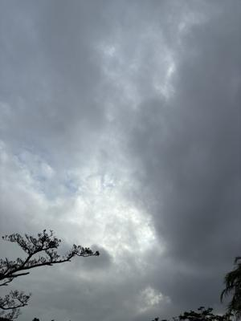
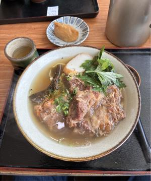
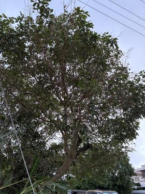

うるがいの話 ある日
最新: 沖縄ソバ【うるがいの話 ある日】とは 一日だけのプログです
『うるがいの話』の最新一日だけのプログで、通信料が少なく経済的だ。カニの画像をクリックすると全ての日付が載る『うるがいの話』サイトを表示します
|
|
【うるがいの話】 うるがい(ｳﾙｶﾞｲ urugai)とは、『もずくがに』の名前でとても大きくなります。 |
|---|---|
|
|
【カミマヤーの話】 猫のことを方言でマヤーといいます。カミマヤー（kamimayaa）とは、神の猫のことです。 |
|
【たながぁの音楽】 たながぁ（ﾀﾅｶﾞｰ tanagaa）とは手長えびのことで、何種類かあり大きいのは車 エビぐらいになります。 |

|
【ぶながぁの話】 ぶながぁ(ﾌﾞﾅｶﾞｰ bunagaa)とは、赤い髪の毛、赤い身体、そして身長は１ｍ２０ｃｍ ぐらい、川の蟹を食べているの目撃された。場所は沖縄県国頭郡大宜味村のと ある村僕の隣近所に住んでいる爺さんから、聞いた話です。 |
|
|
【ギーマの話】 ギーマ(giima)とは、山原の里山に咲くスズランに似た、 花を付けます。実は食べられます、 気が付くと口の周りが紫になっています。 |
2026年06月03日 (水）沖縄ソバ
15:25

テレビを見ている何度も、沖縄ソバがでてくる。フムフム、子供
が、昨夜、記念日だとかでフルコース料理の写真をラインで送っ
てきた。それではと、コロナが流行る前に単に行っていたお店に
行った。千円の沖縄ソバ、沖縄ソバの味がした。

最接近時、一時風弱まる 琉球新報の記事より
台風６号の影響で、県内では倒木やけが人など被害が相次いだ。
一方、沖縄本島では最接近した１日夜よりも、同日昼や２日未明
の風速の方が強い地点が多かった。
識者は「台風の最接近頃に風が強くならなかった、珍しいケース」
だと話す。要因として、本島南の海水温が低い海域を通ったこと
と、台風の西側に乾燥した空気が流れ込んだことが関係している
と指摘する。
台風の那覇市への最接近は１日午後８時だったが、風が最も強か
ったのは同日午後１時過ぎ。那覇の最大風速は午後１時６分の２
３．４メートル、最大瞬間風速は同１時５分の３７・９メートル
だった。
なるほど、最大瞬間風速は４０メートル近くあったのだ。レイシ
の実は、昨日のみると跡形もなく風で吹き飛ばされていた。それ
にしても珍しい台風だった。
